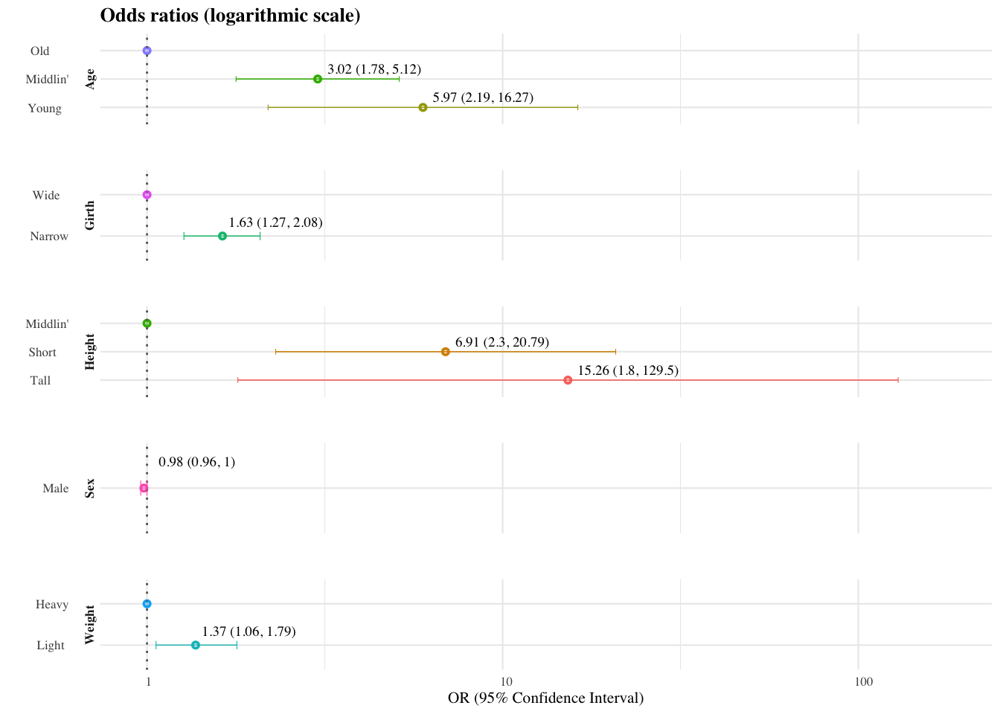
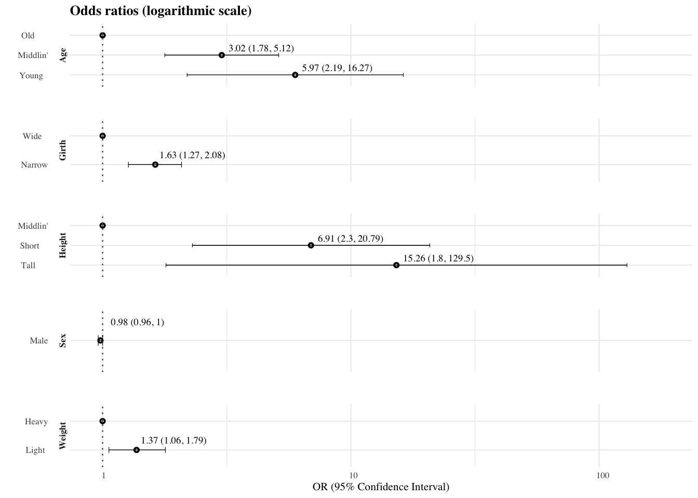

6 Forest plots
6.1 When model not developed in R
6.1.1 Colour version
The following graphs were created using GGplot when the base model was not created in R (i.e., all you have is an excel file or CSV file of estimates and confidence intervals because your mate Billy asked you to make him a graph but your mate Billy still insists on using Microsoft Excel despite you repeatedly telling him how good R is).
# Loading the necessary packages
library(tidyverse)
library(ggrepel)
library(magrittr)
library(janitor)This just creates a test dataset - just copy and paste the code below to create the dataset necessary for our example graph.
test_data <- tribble(
~term, ~estimate, ~conf.low, ~conf.high, ~level,
"Weight", 1, 1, 1, "Heavy",
"Weight", 1.37, 1.06, 1.79, "Light",
"Height", 1, 1, 1, "Middlin'",
"Height", 6.91, 2.3, 20.79, "Short",
"Height", 15.26, 1.8, 129.5, "Tall",
"Age", 1, 1, 1, "Old",
"Age", 3.02, 1.78, 5.12, "Middlin'",
"Age", 5.97, 2.19, 16.27, "Young",
"Girth", 1, 1, 1, "Wide",
"Girth", 1.63, 1.27, 2.08, "Narrow",
"Sex", 0.98, 0.96, 1, "Male"
)This code sets global options to apply to all parts of the example graph.
theme_set(
theme_minimal # Setting the default theme to base settings on
(
base_family = "Times", # Setting default font
base_size = 8
) # Setting font size
)Running the code to get the actual graph. The code is quite long as I have merged the estimates and confidence interval variables into a single variable use to label the graph at the end, haven’t been able to find a way to do this in a more elegant and concise way.
test_data %>%
mutate(level = fct_reorder(level, desc(estimate))) %>% # To get the levels in order of strength of point estimate
unite("confidence_intervals",
conf.low, conf.high,
remove = FALSE,
sep = ", "
) %>% # This step (and the next unite and mutate) creates a new variable containing point estimate and CIs, necessary for one of the steps below
mutate(
confidence_intervals =
paste0("(", confidence_intervals, ")")
) %>%
unite("estimate_confidence_intervals",
estimate, confidence_intervals,
remove = F,
sep = " "
) %>%
mutate(estimate_confidence_intervals = case_when(
conf.low == 1 ~ "", TRUE ~ estimate_confidence_intervals
)) %>% # This step gets rid of the estimates and CIs from the reference levels (converting to NA doesn't work)
ggplot(aes(x = level, y = estimate, ymin = conf.low, ymax = conf.high)) +
geom_pointrange(aes(col = level), size = 0.2, shape = 1) +
geom_hline(yintercept = 1, linetype = "dotted", color = "grey40") +
xlab("") +
ylab("OR (95% Confidence Interval)") +
geom_errorbar(aes(ymin = conf.low, ymax = conf.high, col = level), width = 0.2, cex = 0.2) +
facet_wrap(term ~ ., strip.position = "left", nrow = 10, scales = "free_y") +
scale_y_continuous(trans = "log10") +
theme(
plot.title = element_text(size = 10, face = "bold"),
axis.text.y = element_text(hjust = 0.2, lineheight = 0.2),
axis.text.x = element_text(hjust = 0.2),
panel.background = element_blank(),
panel.spacing.y = unit(0.5, "null"),
strip.text.y = element_text(hjust = 0.5, vjust = 0, angle = 90, face = "bold"),
legend.position = "none"
) +
coord_flip() +
labs(title = "Odds ratios (logarithmic scale)") +
geom_text_repel(aes(label = estimate_confidence_intervals), # what you want to label with, this is the variable we created above
family = "serif", # font
size = 2.5, # Size of text of label
nudge_x = 0.35, # Nudge label up and down
nudge_y = .15, # Nudge label left and right
min.segment.length = Inf, # This removes the annoying lines that join labels to their point
xlim = c(-Inf, Inf), # These two limit lines prevent labels being repelled by boundaries of graph
ylim = c(-Inf, Inf)
)
6.1.2 B&W version
Only very minor changes to the code above
test_data %>%
mutate(level = fct_reorder(level, desc(estimate))) %>% # To get the levels in order of strength of point estimate
unite("confidence_intervals",
conf.low, conf.high,
remove = FALSE,
sep = ", "
) %>% # This step (and the next unite and mutate) creates a new variable containing point estimate and CIs, necessary for one of the steps below
mutate(
confidence_intervals =
paste0("(", confidence_intervals, ")")
) %>%
unite("estimate_confidence_intervals",
estimate, confidence_intervals,
remove = F,
sep = " "
) %>%
mutate(estimate_confidence_intervals = case_when(
conf.low == 1 ~ "", TRUE ~ estimate_confidence_intervals
)) %>% # This step gets rid of the estimates and CIs from the reference levels (converting to NA doesn't work)
ggplot(aes(x = level, y = estimate, ymin = conf.low, ymax = conf.high)) +
geom_pointrange(size = 0.2, shape = 1) +
geom_hline(yintercept = 1, linetype = "dotted", color = "grey40") +
xlab("") +
ylab("OR (95% Confidence Interval)") +
geom_errorbar(aes(ymin = conf.low, ymax = conf.high), width = 0.2, cex = 0.2) +
facet_wrap(term ~ ., strip.position = "left", nrow = 10, scales = "free_y") +
scale_y_continuous(trans = "log10") +
theme(
plot.title = element_text(size = 10, face = "bold"),
axis.text.y = element_text(hjust = 0.2, lineheight = 0.2),
axis.text.x = element_text(hjust = 0.2),
panel.background = element_blank(),
panel.spacing.y = unit(0.5, "null"),
strip.text.y = element_text(hjust = 0.5, vjust = 0, angle = 90, face = "bold"),
legend.position = "none"
) +
coord_flip() +
labs(title = "Odds ratios (logarithmic scale)") +
geom_text_repel(aes(label = estimate_confidence_intervals), # what you want to label with, this is the variable we created above
family = "serif", # font
size = 2.5, # Size of text of label
nudge_x = 0.35, # Nudge label up and down
nudge_y = .15, # Nudge label left and right
min.segment.length = Inf, # This removes the annoying lines that join labels to their point
xlim = c(-Inf, Inf), # These two limit lines prevent labels being repelled by boundaries of graph
ylim = c(-Inf, Inf)
)